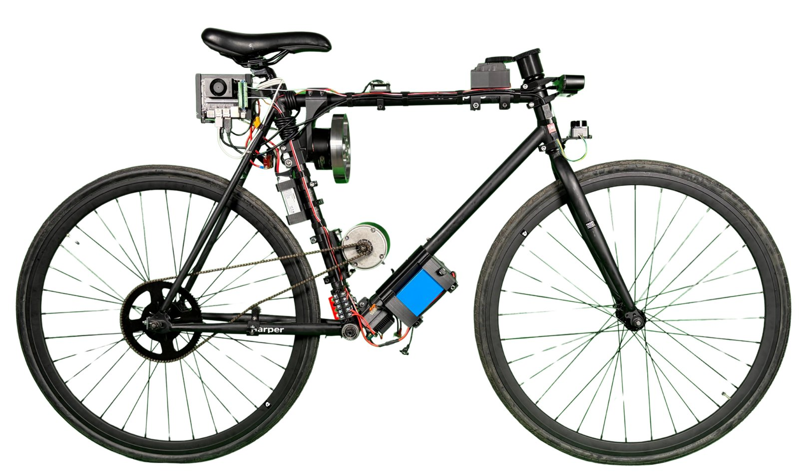
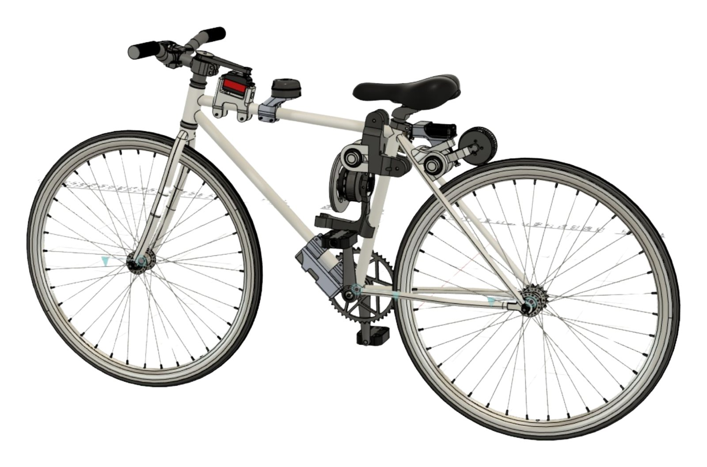
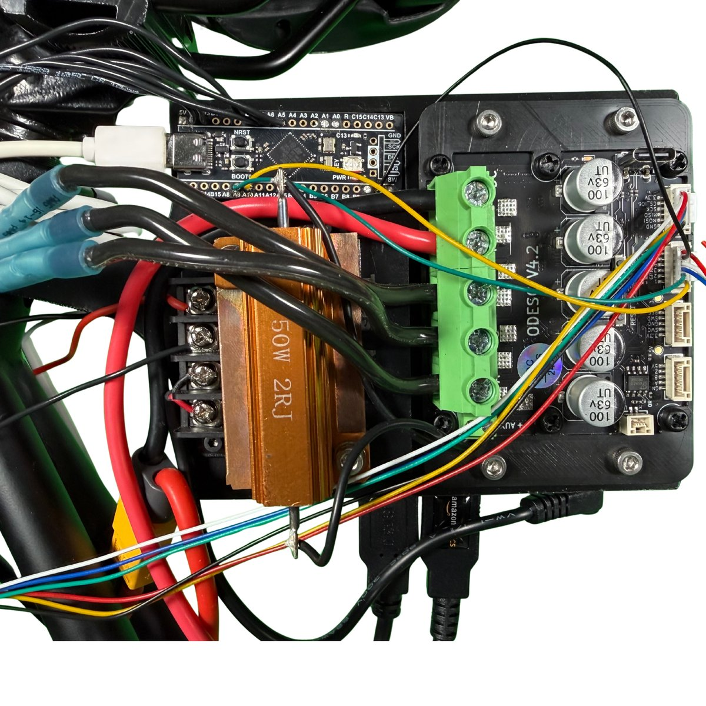
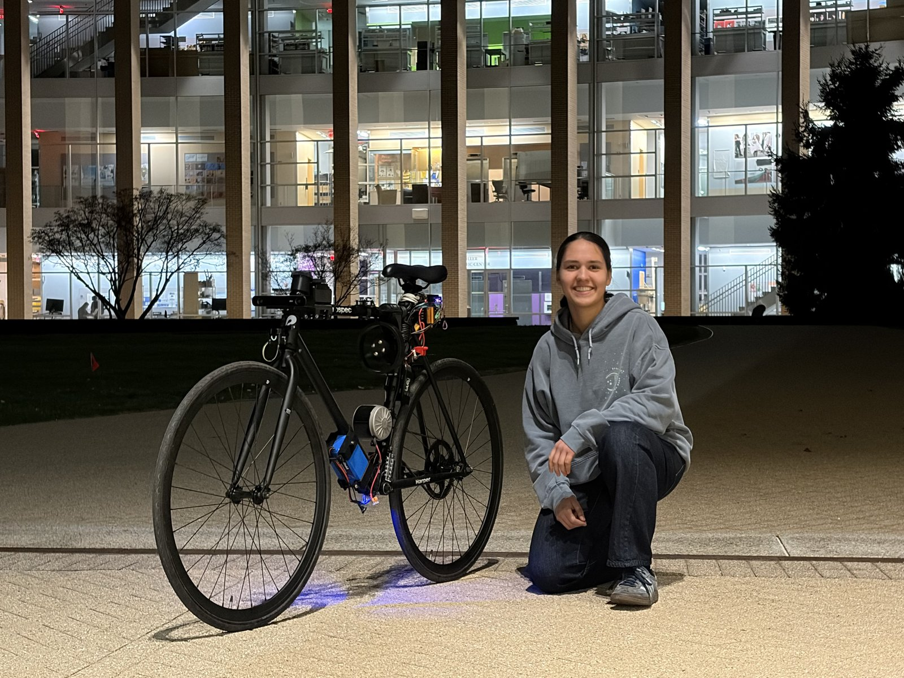

Autonomous Self-Balancing Bicycle
A self-balancing bicycle using a high-inertia reaction wheel and PID control.
Overview
From February to May 2026, I worked on a bicycle capable of dynamically balancing itself, using a high-inertia reaction wheel and PID control. The long-term goal is a self-balancing, driverless bicycle that can navigate autonomously indoors and outdoors; this phase focused on getting it to balance. [TODO: was this a class or team project, and why a self-balancing bike?]
Code on GitHub.
My role
As Lead Mechanical Engineer, I led the complete mechanical design, engineering, and manufacturing of the bicycle, including custom 3D-printed mounts and machined components. [TODO: team size, and who worked on the electronics and software.]
Design & build
The heart of the system is an active reaction wheel, driven by a 24V 200W BLDC motor under STM32 control. I designed the lightweight steel wheel with a custom lightweighting pattern, had it cut on the waterjet, and finished it on the mill, along with a machined aluminum motor interface for high-inertia stabilization. [TODO: how you chose the wheel's size and inertia.]

I designed and 3D printed custom mounts throughout the system, and integrated the mechanical system with the STM32-based PID controller for dynamic balance adjustment. [TODO: what went wrong along the way and how you fixed it.]

Results
The integrated bicycle achieved stationary dynamic balance. [TODO: how well it balanced (e.g. how long, how much disturbance it recovered from).]

Next steps
The plan for the next phase is to turn the bike into a fully autonomous platform: convert the lightweight fixed-gear frame to electric drive with servo steering and braking and a chain-driven motor, run a ROS2-based SLAM and planning stack on an NVIDIA Jetson Orin Nano Super, use visual SLAM with RRT* for real-time mapping and motion planning in unknown environments, and add a 2D LiDAR for fast obstacle detection and avoidance.